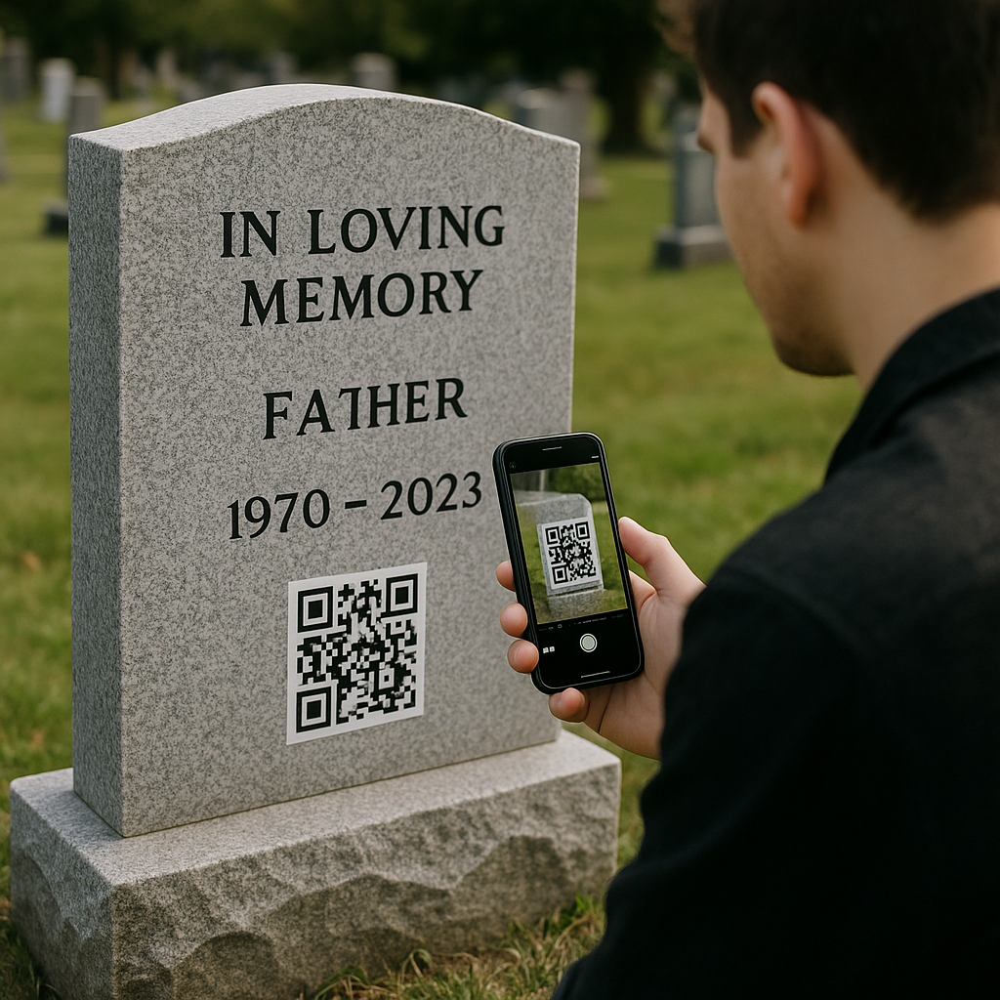
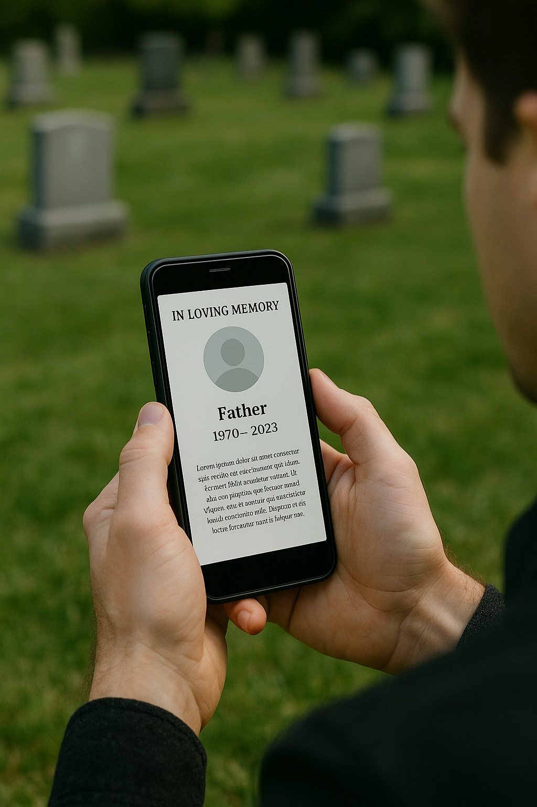

¿Cómo funciona?

Escaneá

Accedé al homenaje

Compartí su historia
Escaneá
Accedé al homenaje
Compartí su historia
“Aquí vive lo que nunca se fue: risas, abrazos y momentos que el tiempo no pudo borrar.”
“Creo que todos merecemos ser recordados con amor, con historia, con verdad. Así nació Memoria Viva.”
Mi nombre es Agustín, y este proyecto nace desde un lugar muy personal. Como muchos, pasé por la pérdida de seres queridos. En ese proceso entendí que el verdadero duelo no es olvidar, sino aprender a recordar de otra manera.
Memoria Viva es una plataforma que conecta un simple código QR en una lápida o recuerdo físico con un homenaje digital: fotos, historias, videos y mensajes que mantienen viva la memoria de quienes amamos.
No somos solo tecnología.
Somos puentes entre generaciones.
Somos un acto de amor transformado en experiencia.
Somos la prueba de que una vida no se apaga cuando deja huella.
Nuestra misión es simple pero profunda: transformar el recuerdo en presencia, hacer del acto de recordar algo íntimo, cálido y eterno.
Gracias por confiar en nosotros para cuidar lo más valioso que tenemos: la memoria.
— Agustín Alejandro Alaniz
Creador de Memoria Viva
¿Querés crear un homenaje digital o tenés alguna duda? Escribinos, estamos para acompañarte.